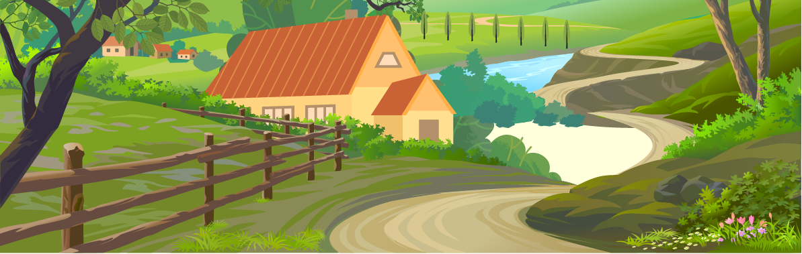

Em um dia desses encontrei um mapa
Vc começa sua viagem no Rio de Janeiro próximo do campo do Botafogo
Pernambuco, vc visita a história da cidade de Olinda


Votorantim, vc Votorantim
VC encontrou a escola